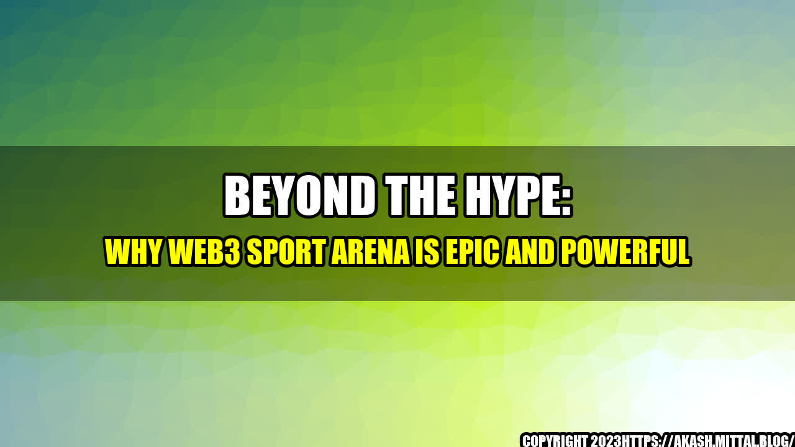

Beyond the Hype: Why Web3 Sport Arena is Epic and Powerful

It was a sunny day in June when Tom went to the stadium to watch his favorite football team play. As he made his way to his seat, he couldn't help but notice the empty corridors, the lack of excitement, and the absence of fans. He missed the feeling of being a part of something bigger, of belonging to a community, of sharing a passion with like-minded people. That's when he realized that the Web3 Sport Arena could change everything.

The Web3 Sport Arena is a platform that leverages blockchain technology, smart contracts, and non-fungible tokens to create a new kind of sports experience. It allows fans to buy, sell, and trade unique digital assets related to their favorite teams and players, such as tickets, jerseys, trading cards, and even virtual real estate. These assets have real-world value, and their ownership is secured by the blockchain, which means they can't be duplicated, altered, or destroyed.
But the Web3 Sport Arena is more than just a marketplace for digital assets. It's a social network, a gaming platform, and a virtual reality world rolled into one. It allows fans to connect with each other, compete in games and challenges, and experience sports in a whole new way. It's a place where sports become more than just a game, but a lifestyle, a culture, a community.
Quantifiable Examples
- According to a report by Grand View Research, the market for blockchain in sports is expected to grow from $63.5 million in 2020 to $1.9 billion by 2027, with a CAGR of 48.5%.
- The NBA Top Shot, a digital collectible platform powered by blockchain, has generated over $700 million in sales since its launch in October 2020.
- The French football club, AS Saint-Etienne, has partnered with the blockchain platform, Sorare, to create and sell digital collectibles of the team's players, generating over $1 million in revenue in just six months.
- The virtual real estate market in the online game, Decentraland, has seen transactions worth over $50 million.
Why Web3 Sport Arena is Epic and Powerful
The Web3 Sport Arena has the potential to revolutionize the sports industry in many ways:
- It democratizes access to sports. By creating a global, decentralized platform, the Web3 Sport Arena allows fans from all over the world to connect, engage, and invest in sports. No longer are sports limited to physical locations, expensive tickets, or exclusive clubs. Anyone with an internet connection can participate, regardless of their location, status, or background.
- It generates new revenue streams for sports organizations. By creating a new market for digital assets, the Web3 Sport Arena opens up new revenue streams for sports organizations. They can sell digital collectibles, offer exclusive experiences, and monetize their intellectual property in ways that were impossible before. This can help them offset the losses caused by the pandemic, diversify their income sources, and engage with a new generation of fans.
- It enhances the fan experience. By combining social networking, gaming, and virtual reality, the Web3 Sport Arena creates a more immersive, interactive, and personalized fan experience. Fans can connect with other fans, challenge them in games, and explore virtual stadiums, locker rooms, and training facilities. They can also use their digital assets to vote, predict, or influence the outcome of games, making them feel more involved and invested in their favorite teams.
The Web3 Sport Arena is not just a buzzword or a fad, but a real-world application of blockchain technology that has the potential to transform the sports industry. It democratizes access to sports, generates new revenue streams for sports organizations, and enhances the fan experience. If you're a sports fan, a blockchain enthusiast, or a startup founder, don't miss the chance to be a part of this epic and powerful movement.
References:
- https://www.grandviewresearch.com/industry-analysis/blockchain-sports-market
- https://www.coindesk.com/nba-top-shot-700-million-sales-axie-infinity
- https://www.sportsbusinessjournal.com/SB-Blogs/Breaking-News/2021/06/AS-Saint-Etienne-Sorare.aspx
- https://www.decentraland.org/
Hashtags: #Web3SportArena #BlockchainSports #DigitalCollectibles #VirtualRealEstate #FanExperience
Category: Blockchain Technology
Curated by Team Akash.Mittal.Blog
Share on Twitter Share on LinkedIn